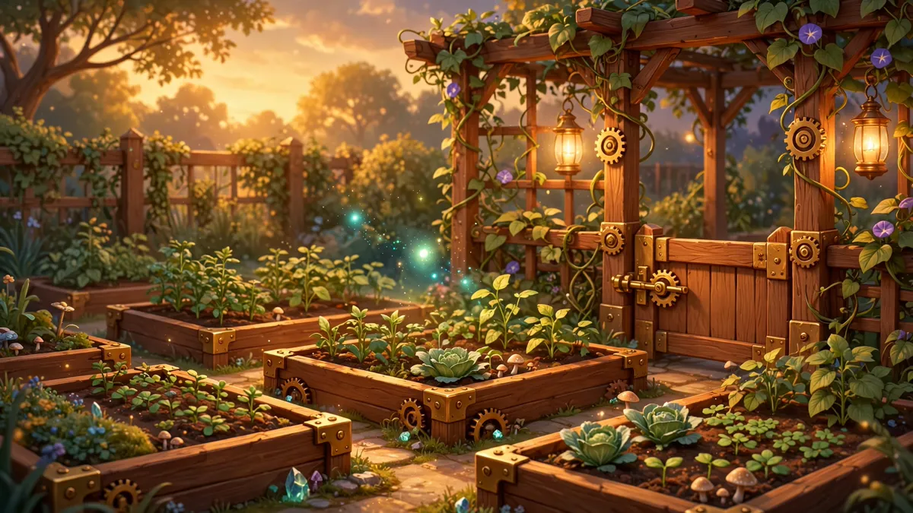

Thirteen beds, one for each Moon — this Moon's bed is the open one. Choose your county below — the planting choices are read from the site's Washington farm data, all
thirty-nine counties, each anchored on its real frost record — plant what it offers, and witness the bed
on the days you keep: that is the whole game. The full rules
stand under How the garden grows, below.
This garden replaces Shroom Search, the mushroom game that stood here
before.
🌿
Today's coordinate loads with your local time.
Reading your garden…
Your ground is remembered on this device, and every planting record carries
the county it was chosen under — changing ground never rewrites a planting
already in the ground. Each county's dates stand on their named station's
NOAA record, or say plainly that they are computed.

The beds below are this garden's real beds, keyed to the thirteen Moons and kept in Living Time. This is the garden they grow in.
The thirteen beds
One bed for each Moon of the year. The open bed takes this Moon's
planting; the others show their spans, their plantings, and what they
hold. Every planting, witness, and harvest is written into your Life
Atlas, stamped with the day it happened.
The beds are read from your Life Atlas records when JavaScript is available.
Growing guides — how and what to plant
Every crop the farm record can plant carries a full guide: when to
plant it in your county — the dates below are counted
from your county's own frost record, and the guide names the station
and the frost dates it counted from — and how to grow it: depth,
spacing, germination, sun, soil, water, companions, harvest signs,
storage, and the troubles a gardener in this region actually meets.
Every line of a guide carries its sources — extension and seed-house
teaching, named on the guide. A fact no source stands behind is left
out, never guessed.
The Moon opens the bed; the farm record sets the dates. Nothing in a
guide is planted by a Moon line.
Your keepsakes
A keepsake is a harvest kept in your Life Atlas — the same record your
witnessed days live in, on this device, under your hand. It rides the
Atlas backup like every other record you keep here, and it returns to
you when its Moon comes round again.
No keepsakes yet. Plant in the open bed, witness it through its Moon, and harvest at the Moon's turn.
The Still Bed
At the garden's foot stands a fourteenth place that is not numbered among
the thirteen: the Still Bed. It opens only on the still days — the
Day Out of Time, and the Deep Time Day
beside it in a long year — and on no other day. On a still day you may lay
one keepsake of the year now ending down in the still
ground: one of your own earned keepsakes, chosen by your own hand, for your
own reasons. What is laid there does not grow, is not witnessed, cannot be
harvested, and is never lost. At the next still day, a full year on, you
find it there, and its return is written beside it — and on that day the
garden's head carries the year's reading, the thirteen beds with their
outcomes in one line each. The laying down is its own record; the keepsake
itself is never edited, moved, or taken away.
The rules — all of them
How the garden grows
A planting grows on the days you keep — the days your own
record holds — while its Moon runs. Witness the open bed and today is
kept. At the Moon's turn, the planting is graded by the days it was
witnessed, kindly and plainly: never witnessed, it slept;
witnessed a little, it was tended — it goes honestly to seed, and
its seed is gathered back to head the same bed's table next year, so
tending is never wasted; witnessed on seven of its days, it is
kept — harvested into a keepsake in your
Life Atlas; witnessed on half the Moon or more, it
flourished, and its keepsake carries the honour. A
harvest waits for your hand — this year or next, nothing earned quietly
disappears. And a keepsake returns: when its Moon comes round next year,
it comes back to you, and it waits to be welcomed if its Moon finds you
busy.
The calendar keys the beds. Thirteen beds, one per Moon; each Moon, its bed is open for that Moon's 28 days. The Day Out of Time opens no bed — the garden rests with the calendar.
The farm record keys the planting. A crop is offered only when a real planting window in the Washington farm data for your county overlaps the open Moon's dates, and the offer names the window and its sources. Moon lines are never farm facts.
Tending is witnessing. A planting grows on the days you keep inside its Moon — days your Life Atlas record holds. The bed's Witness button keeps today. Nothing grows while nothing is kept, and nothing is counted from a clock.
Harvest at the Moon's turn, graded kindly. Seven witnessed days or more, and the planting harvests into a keepsake — fourteen or more, and the keepsake is marked flourished. Fewer, and it goes to seed — the season ended, honestly — but a planting witnessed even once was tended, and its seed is gathered back: next year that crop heads the same bed's table, from your own seed. A planting never witnessed slept, and the record says so in silence. Nothing is ever taken away.
What waits, waits. A harvest not yet gathered stands at the garden's head as a waiting harvest until your hand collects it, across the year's turn and beyond. A keepsake's return, once its Moon has come round, stays offered until you welcome it. Nothing is gathered or welcomed for you in your absence — records are your acts — and nothing earned evaporates while you are away.
A keepsake returns. When the same Moon comes round the next year, last year's keepsake from that bed returns to you, and its return is written beside it.
One planting per bed, and it stands. Each bed holds one planting a year — that is what makes choosing a real choice — and a planting, once written, is a record: there is no uprooting it. Tend it, or let it go to seed; both are honest endings.
The Still Bed opens only in the stillness. On the Day Out of Time — and on the Deep Time Day in a long year — and on no other day, one keepsake of the year now ending may be laid in the Still Bed at the garden's foot. It rests there a full year, neither growing nor lost, and is found at the next still day, when its return is written beside it. A keepsake lying in the still ground makes no Moon return that year; its meeting is the still one.
Your Spark helps. Now and then your Spark finds a seed of the season among the beds — readily at first, rarer later. Plant a found seed and its keepsake remembers where it came from.
Your record, your device. Plantings, witnesses, seeds, returns, and keepsakes are Life Atlas records. Nothing is uploaded anywhere.
Ground rule
A game, kept honest
A keepsake is a record you hold, not an asset: nothing here promises a
price, a yield, or a value, and nothing in the garden can be bought.
Growing is the whole economy — what you earn here, you earn by
planting in season and keeping your days.
The garden is one corner of the bench. Its neighbours are the
practice stations it grows beside.